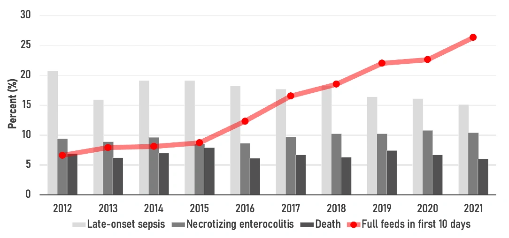

Early Enteral Nutrition is Linked to Sepsis Prevention
Don’t feel like reading? Catch the audio recap here.

Infants born extremely preterm (between 23 and 28 weeks of gestation) face a complex journey in the neonatal intensive care unit (NICU), especially during the first two weeks of life when critical illness is often most severe. Historically, clinicians were cautious about initiating enteral feeding due to concerns about gastrointestinal immaturity and the potential risk of complications like necrotizing enterocolitis (NEC), leading to prolonged minimal enteral feeding or fasting.
However, in recent years, neonatal care has shifted to prioritize human milk feeding and strategies aimed at achieving full enteral feeding sooner.
Our new original investigation published in JAMA Network Open examines data from thousands of extremely preterm infants to quantify the association between delayed feeding and critical outcomes.
The Study: Tracking the Progress of 15,000+ Infants
Our study was a secondary analysis of a multicenter cohort study, prospectively following 15,102 preterm infants born between 2012 and 2021 at 19 US academic centers. The infants included had gestational ages ranging from 23 to 28 weeks, received enteral feedings, and survived beyond postnatal day 7.
We focused on the time it took to achieve full enteral feeding (defined as > 120 mL/kg/d). The primary outcome measured was the incidence of late-onset sepsis (LOS)—a culture-positive infection occurring more than 72 hours after birth.
Finding 1: NICU Practices are Improving, and Outcomes are Following Suit
The data revealed a positive trend across the 19 US academic centers during the study period:
- Faster Feeding: The median time required to achieve full enteral feeding significantly decreased from 18 days in 2012 to 14 days in 2021.
- Early Success: The proportion of infants achieving full enteral feeding within the first 10 days after birth increased substantially, growing from 6.6% in 2012 to 26.3% in 2021.
- Less Sepsis: Coinciding with this accelerated feeding practice, the absolute incidence of late-onset sepsis (LOS) decreased overall from 21.1% to 16.5% between 2012 and 2021.
Finding 2: Every Week of Delay Significantly Raises the Risk of Infection
The core finding of the analysis highlights the dangers of delaying full nutrition for these vulnerable infants:
- Late-Onset Sepsis (LOS): For each additional 1-week delay in achieving full enteral feeding, the adjusted relative risk (ARR) of late-onset sepsis was 16% higher (ARR, 1.16; 95% CI, 1.14-1.18).
- The Protective Effect: Conversely, the study found that each additional day of full enteral feeding in the first 28 days after birth was associated with a lower risk of LOS (ARR, 0.95).
We concluded that shorter time frames to establish full enteral feeding were associated with a lower risk of LOS. This is broadly consistent with meta-analyses showing that early achievement of full enteral feeding reduces the risk of severe infection.
Finding 3: Delays Impact the Gut and Growth Trajectories
Slower progression to full feeds was also strongly linked to critical issues beyond infection, including severe gut disease and problems with growth:
- Necrotizing Enterocolitis (NEC): Delays in achieving full enteral feeding were associated with a higher risk of NEC (ARR, 1.20; 95% CI, 1.16-1.24). The authors note that shorter time to establish full enteral feeding was associated with a lower risk of NEC.
- Growth Faltering: Delays were associated with a higher risk of growth faltering in weight (ARR, 1.08), length (ARR, 1.03), and head circumference (ARR, 1.07).
Conclusion: Time is Nutrition
The study confirms that early full enteral feeding is associated with significant benefits for extremely preterm infants, including a lower risk of LOS, NEC, and growth faltering. Furthermore, early full feeding was linked to a shorter duration of parenteral nutrition and a shorter length of hospital stay.
These findings, which used a proxy for illness severity in their adjustments, suggest that the trend toward establishing full enteral feeding shortly after birth in EPT infants is not only feasible but also beneficial, providing critical information to inform evidence-based nutritional strategies.
In essence, for the extremely preterm infant, every day spent achieving full feeds is a day gained in fighting infection and promoting optimal development. Just as a seedling needs immediate, consistent water and nutrients to thrive, delaying full feeding in the most vulnerable infants appears to impede their immune development and growth, leaving them unnecessarily exposed to risks like sepsis.
Read the full-text article published in JAMA Network Open here